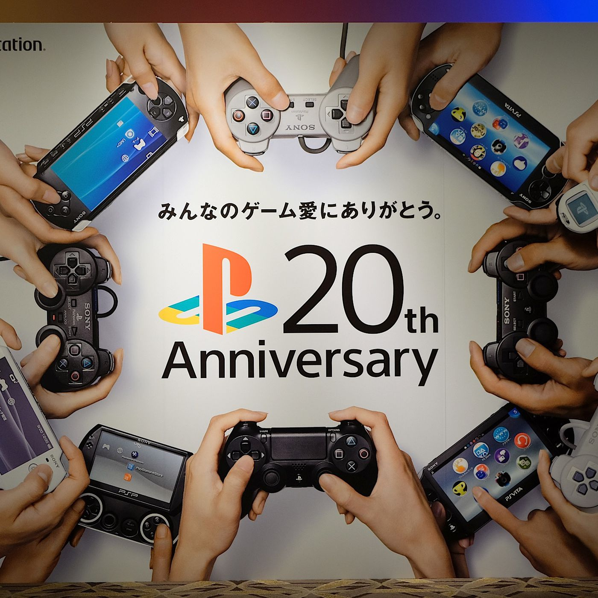

Playstation
De Playstation, een iconisch product van Sony, heeft een revolutionaire impact gehad op de gamewereld. De eerste PlayStation, gelanceerd in 1994, bood gamers een indrukwekkende 3D-ervaring en introduceerde populaire franchises zoals Final Fantasy en Resident Evil. De evolutie van PlayStation- gamingconsoles, zoals de PlayStation 2, 3, 4 en nu de 5, heeft constant de grenzen van grafische prestaties en gameplay verlegd. Sony's strategie om te investeren in exclusieve titels, zoals de veelgeprezen God of War en The Last of Us, heeft de PlayStation-reeks een dominante positie in de industrie gegeven.
De impact van de PlayStation gaat verder dan alleen hardware en games. Sony's introductie van online gaming met de PlayStation Network (PSN) heeft de manier waarop mensen met elkaar spelen en communiceren veranderd. Gamers kunnen nu wereldwijd tegen elkaar strijden, samenwerken en content delen. Het PlayStation Plus-abonnement, dat exclusieve voordelen en gratis maandelijkse games biedt, heeft het online gamen naar een hoger niveau getild. Bovendien heeft Sony met initiatieven zoals Remote Play en PlayStation Now de grenzen tussen console- en cloudgaming verkleind. De PlayStation heeft daarmee niet alleen de gamingervaring geëvolueerd, maar ook de manier waarop gamers met elkaar in verbinding staan, waardoor het een integraal onderdeel van de moderne gamecultuur is geworden.
Een ander fascinerend aspect van de PlayStation is de opkomst van virtual reality (VR) binnen het PlayStation-ecosysteem. Met de introductie van PlayStation VR heeft Sony de grenzen van gaming verder verlegd. Deze technologie biedt gebruikers een meeslepende ervaring, waarbij ze letterlijk in hun favoriete games kunnen duiken. Dit heeft niet alleen het gaminglandschap verrijkt, maar ook de verkenning van VR-toepassingen buiten gaming gestimuleerd. De PlayStation heeft daarmee bijgedragen aan het democratiseren van VR-technologie en heeft het voor een breder publiek toegankelijk gemaakt. Dit laat zien hoe Sony met de PlayStation constant blijft innoveren en nieuwe dimensies aan de game- ervaring toevoegt.